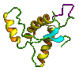

Профессор Стэнли Прусинер (Stanley Prusiner), получивший Нобелевскую премию за открытие прионов - аномальных протеинов, вызывающих болезнь «коровьего бешенства», считает необходимым проведение обследования всех жителей Великобритании на смертельно опасное заболевание головного мозга в связи с обнаружением чрезвычайно высокого уровня прионов в мышечной ткани инфицированных мышей.
Профессор Стэнли Прусинер (Stanley Prusiner) из Калифорнийского университета, Сан-Франциско, США, утверждает, что обнаружение высокого уровня прионов в мышечной ткани инфицированных мышей может означать аналогичное поражение мышечной ткани коров и овец. До сих пор считалось, что уровень прионов в мясе инфицированных коров и овец достаточно низок и не представляет существенного риска для человека; указывалось только на необходимость тщательного удаления головного и спинного мозга животных, в которых содержание прионов гораздо выше.
Однако разработанные недавно в Калифорнийском университете методы определения прионов оказались более чувствительными и продемонстрировали, что концентрация прионов в мышечной ткани выше, чем предполагалось ранее. Несмотря на значимость открытия, уровень прионов в мышцах все же в 100 раз меньше, чем в ткани головного мозга.
С. Прусинер считает необходимым провести обследование всех жителей Великобритании для того, чтобы выяснить истинную распространенность нового варианта болезни Крейцфельдта-Якоба, от которой с 1995 г. погибли 117 человек.
«Около миллиона коров, инфицированных спонгиоформной энцефалопатией коров (СЭК), были включены в Великобритании в пищевую цепочку. В связи с этим почти каждый житель страны имеет риск быть инфицированным прионовым протеином, который вызывает новый вариант болезни Крейцфельдта-Якоба. Каждый британец должен пройти обследование, т.к. это позволит выявить заболевание еще до появления симптомов», - полагает С. Прусинер.
Ученые из Лондонского университетского колледжа провели недавно исследование на мышах, которое показало, что СЭК может вызывать как спорадическую форму болезни Крейцфельдта-Якоба, так и новый вариант болезни Крейцфельдта-Якоба. Если эти данные будут подтверждены, количество потенциальных жертв может значительно увеличится.
CID 2003: 36